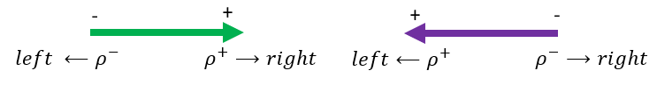
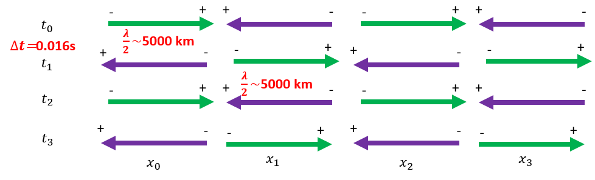
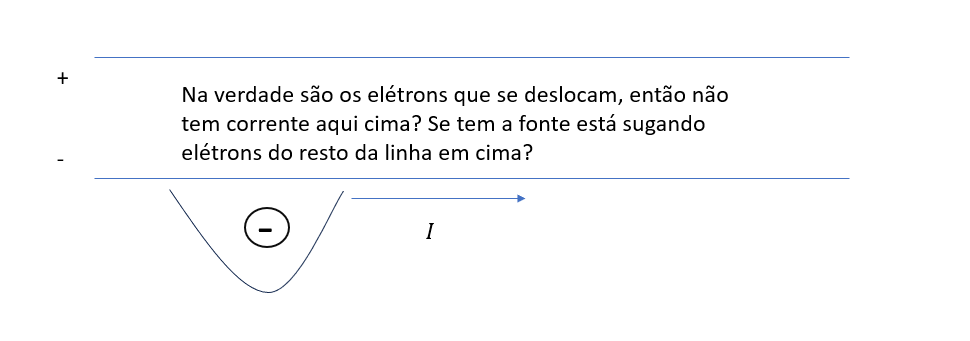
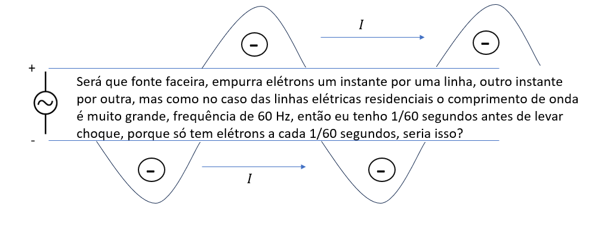
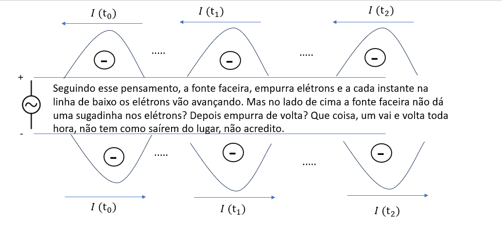
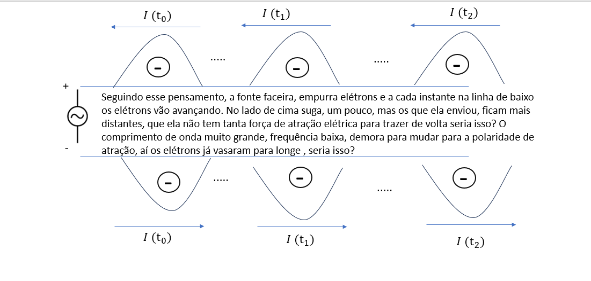
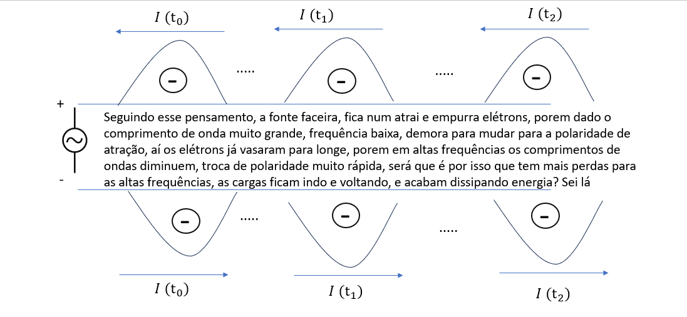

Microwave Circuits#
Collab: https://drive.google.com/file/d/186cQ-leDyDpDGfLVsOqFmRGBX7PyZWrB/view?usp=sharing
I will try to use MoM/CST FDTD and Matlab tool boxes for RF/Electrical circuits/Control Systems
1 General Overview#
Electrical circuits are topological networks, topology in mathematical concept, which studies the space properties invariance under continous deformation. We have an arrangement of nodes, and edges, where the disposition does not matter, but the interaction. Will it matter in the electromagnetic circuits? (Or still topological). The electromagnetic propeties will change? The voltages, currents remain unchangeable if you stretch the transmission lines, what does justifies the topological idea of the electromagnetism.The symmetry operations?
Electric circuits are the basic representation of the electromagnetic circuits, being both the same, which the concerned metrics are Voltages and Currents. In Electromagnetic countepart we add the beauties of the electromagnetic fields as main metrics.
Graph theory helps to visualize and decribe the interconexions, as well as, to optimize this circuits, the telecommunication and computer science steal the ideas (Circuitos Elétricos 2).
1.1 Components Classification#
Electrical circuits components can be classified as active and passive components. The active ones provide energy to the network and the passive ones, absorb energy from the network.
Active: Amplifiers, Sources
The active circuits can have negative resistance (my case, i have oscilations of motivation ahahhahaha)
Passive : Resistors, Inductors, Capacitors
1.2 Justification#
In the literature we will commonly find the time analysis using narrow band signals. However wide band signals can provide a richer resolution from the time motion of the current. Using FDTD simulations transmission lines and waveguides, we will try to analyse pratical application o time domain analysis.
3 AC & DC Voltage/Currents#
To be simulated in the future Power Cables ( I will do only RF case for Electrical Components)#
Correntes positivas: Fluxo de cargas positivas para uma determinada direção.
Correntes negativas: Fluxo de cargas negativas para uma determinada direção.
Mas geralmente negamos a corrente para indicar que ela flui em sentido oposto em circuitos elétricos básicos (sem convenção fasoriais), certo? Como podemos explicar tudo isso? Também em circuitos elétricos afirmamos pela convenção da seta, se a seta estiver apontada para a direita, cargas negativas fluirão para a esquerda.

Agora analisando a corrente na origem por exemplo, injetando uma corrente alternada, na minha cabeça penso logo como é possível, se a carga positiva uma hora flui para direita, depois para esquerda, as cargas nao saem do lugar ?

Olhando o diagrama acima, uma corrente alternada de pulsos, considerando que a cada posição x muda o sentido das cargas, as cargas retornam a posição inicial ( sera que ta certo o diagrama)
\(x_2-x_1=\) meio periodo espacial do pulso
\(t_2-t_1=\) meio periodo temporal do pulso





Calcular as Forças elétricas ao longo do cabo, tem sentido quantico? Qual relação com os campos das ondas eletromagnéticas? Nao existe irradiação a partir de corrente DC pura, só se há variação da corrente no espaço-tempo, ou por meio de corrente alternada? Porque?#
Muitas dúvidas, não sei explicar, com argumentos bem físicos, o que acontece, só formulação de hipóteses, que precisam ser confirmadas se for o caso, ou refutadas com as referencias, experimentos físicos, etc
Minha opinião raciocínio: Pela referência de fase (ou referência de tempo, translação no tempo infere translação de fase), como vimos nas equações de meio ciclo. Nos cicuitos elétricos básicos não fasoriais e circuito CC, as correntes tem a mesma fase sempre, se negada, a oposição de corrente ocorre sempre.
Mas o que significa diferença de fase em termos de fluxo de cargas elétricas no tempo e no espaço? Pela referência de fase (ou referência de tempo, translação no tempo infere translação de fase), como vimos nas equações de meio ciclo.
Mas o que significa diferença de fase em termos de fluxo de cargas elétricas no tempo e no espaço?
Resistors If we have a current time signal passing through a resistor or a resistive transmission line. In this case a Gaussian Pulse, \(i(t)=\frac{e^{}}{}\)
\(V=R I\)